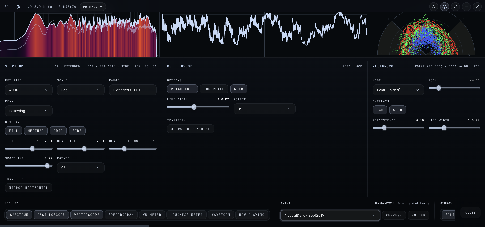
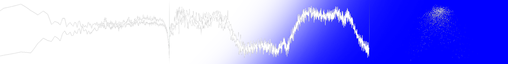

Spectrum Analyzer
Calibrated dBFS levels, FFT sizes from 1024 to 16384, Log/Mel/Linear scales, spectral tilt, heatmap and fill modes, plus peak frequency and pitch readouts.
Seven analyzers. One native engine. Monitor system audio or an input on the desktop, inspect a track inside your DAW, or keep an eye on the signal from the terminal.
Build a rack around the signal, not the other way around. Every analyzer is independently configurable, resizable, rotatable where supported, and available across Prism’s desktop, plugin, and terminal surfaces.
Calibrated dBFS levels, FFT sizes from 1024 to 16384, Log/Mel/Linear scales, spectral tilt, heatmap and fill modes, plus peak frequency and pitch readouts.
Stable time-domain views with fundamental-frequency pitch locking and sub-sample triggering.
XY, Polar, and M/S Linear stereo analysis with calibrated references and optional multiband RGB.
Classic and frequency-reassigned views across Log, Mel, and Linear scales with stereo-energy analysis.
300 ms metering, adjustable 0 VU calibration, stereo correlation, and needle or bar displays.
ITU-R BS.1770 momentary, short-term, and integrated LUFS with true-peak activity.
Scrolling mono or stereo history with transient-preserving sampling and optional multiband energy. Spectrum, Spectrogram, Oscilloscope, and Waveform also provide interactive measurement overlays.
Each host is built around the same native analysis implementations where applicable. The interface changes; the analyzer vocabulary and calibration do not.
Prism captures the active system output without a virtual audio cable, or switches to a microphone, interface, or line input. Scopes can remain in the rack or run as independent popout windows.
All seven analyzers are available as mono or stereo pass-through plugins. Prism does not modify the host audio buffer, and analyzer state is stored with the project.
prism-tui uses the same analyzer and system-capture implementations in a keyboard-driven interface with live output switching, input trim, profiles, and .iro themes.
Prism continuously retains the selected amount of PCM audio in memory. Drag the buffer out as a mono or stereo, 16-bit RIFF/WAV file without starting a recording beforehand.
Prism’s neutral dark interface is the starting point, not a locked identity. Save entire workspaces as profiles and change the application and every analyzer through editable theme files.

Save visible scopes, rack layout, analyzer settings, window state, and popout positions as a shareable workspace.
Edit interface, control, scope, gradient, guide, label, meter, and overlay colors in a human-readable theme file.
Run the rack and popouts on solid, blurred, or clear backgrounds, then pin the scopes above the applications you use.
Built-in chroma themes make it easy to key Prism’s scopes into OBS and other video workflows as clean overlays.

Prism’s visual surfaces share native analysis implementations, tested calibration behavior, and a signal path designed to keep expensive work away from real-time audio callbacks.
Prism is free and open source. Installable packages include the desktop app and the components supported by each platform, including DAW plugins and prism-tui where applicable.
Desktop · VST3 · TUI
Desktop · VST3 · AU · TUI
Desktop · VST3 · TUI
git clone https://github.com/Boof2015/prism.git cd prism npm install # builds the native module npm run dev # desktop development npm run dist:mac # or dist:win / dist:linux